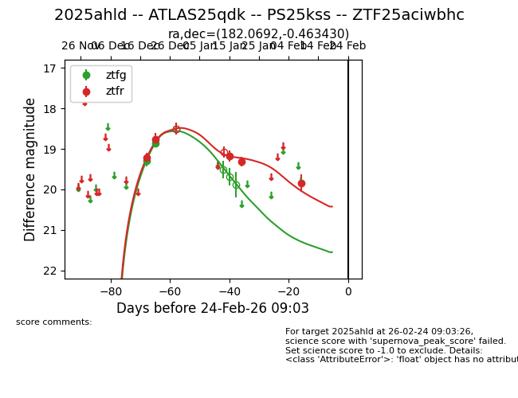
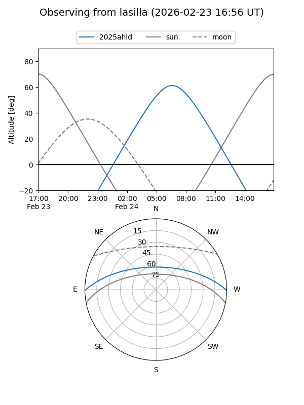
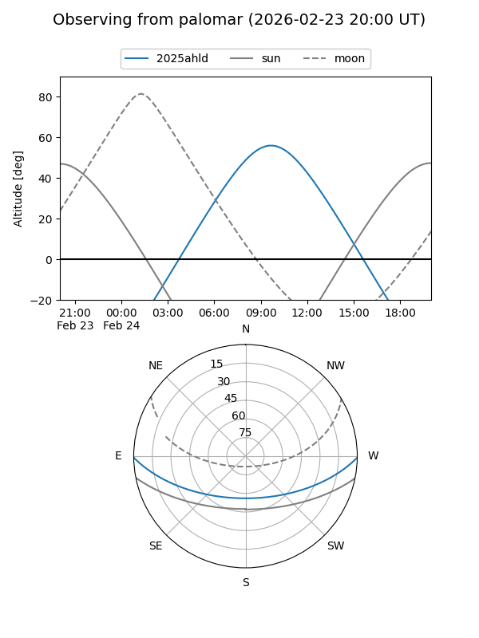
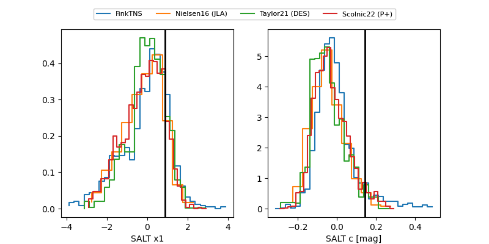

2025ahld
Target 2025ahld at 2026-01-15 14:20
Aliases and brokers:
FINK: link
Lasair: link
ALeRCE: link
TNS: link
YSE: link
alt names
ZTF25aciwbhc (ztf,fink_ztf)
2025ahld (tns,yse)
ATLAS25qdk (atlas)
PS25kss (panstarrs)
Coordinates:
equatorial (ra, dec) = 182.0692,-0.46343
equatorial (HMS+DMS) = 12:08:16.61,-00:27:48.35
galactic (l, b) = (280.5720,+60.52092)
Flags:
Photometry:
last ztfg=18.86, ztfr=19.18
2 ztfg, 3 ztfr detections
Lightcurve

Visibility


Additional plots
